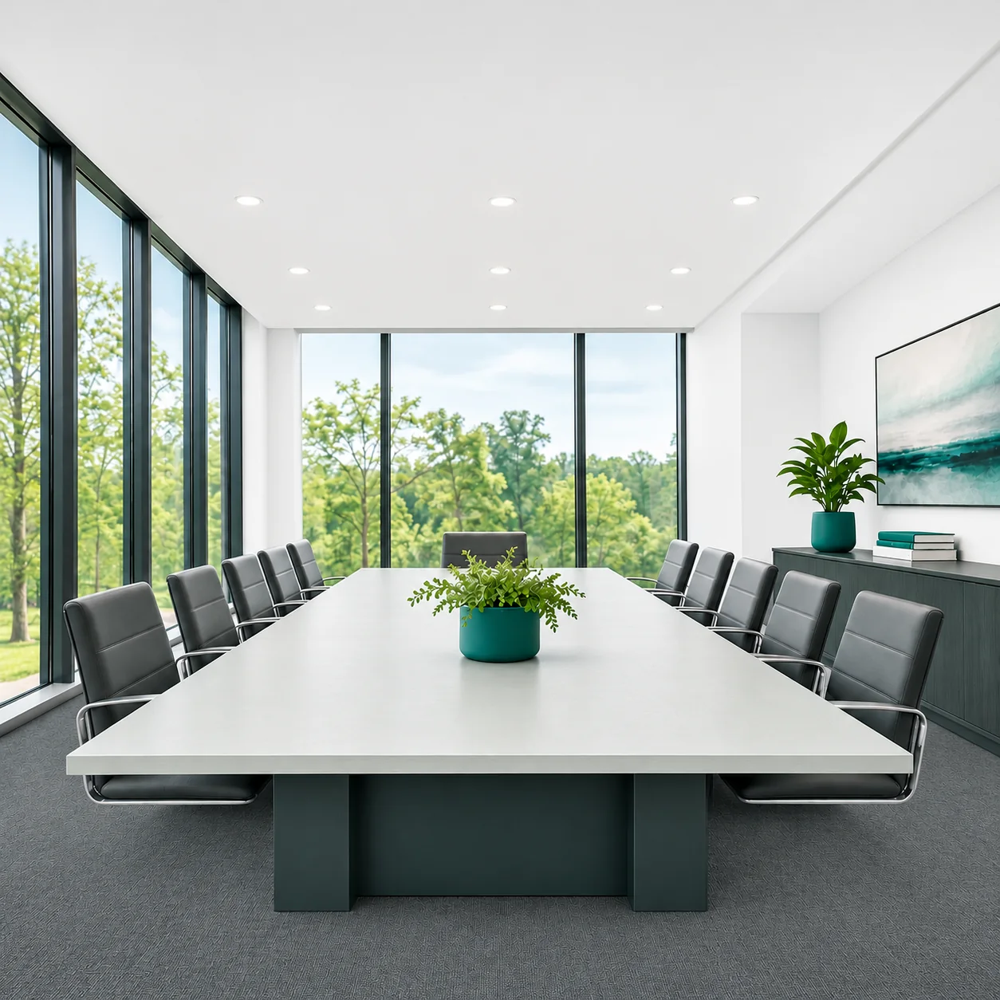

Realign
Reconnect your people, priorities, and decisions to the purpose you serve.
We help boards reclaim their time, clarify their priorities, and turn meetings into meaningful progress.
Start A Conversation
An action item goes unfinished. A decision gets revisited. Another meeting ends, and the work that matters is still waiting. Even committed, capable boards can spend more time discussing what hasn't happened than moving forward.
Every board is different. The right solution starts with understanding what yours needs.
Reconnect your people, priorities, and decisions to the purpose you serve.
Bring clarity to responsibilities, expectations, and what progress looks like.
Make meetings and processes work better, from discussion to follow-through.
Let's find the right direction for your board.